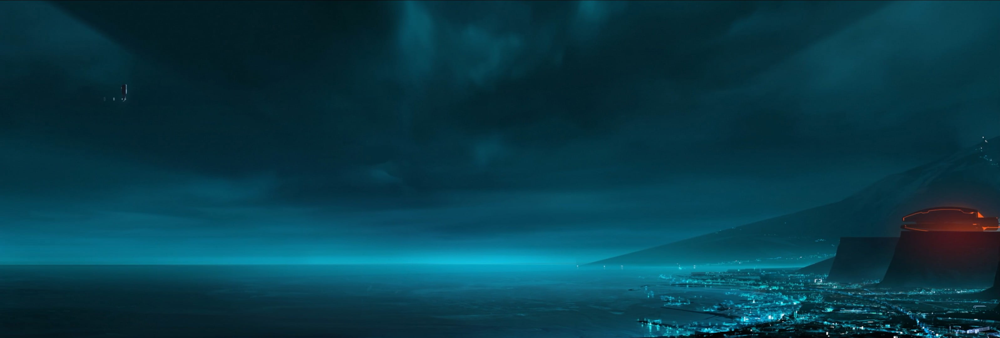

Sistema Digital Paralelo
.jpg)
Programas con Personalidad
.jpg)
Explora un mundo digital lleno de luz, velocidad y estilo futurista.
Los fondos oscuros permiten que los elementos brillantes resalten con fuerza, creando un fuerte contraste visual.
Estilos luminosos en neón que simulan circuitos digitales y dan un efecto futurista intenso.
Fuentes que imitan pantallas digitales o entornos cibernéticos, como Orbitron.
Las sombras y brillos se utilizan para dar profundidad y simular ambientes tridimensionales.

La historia original sigue a Kevin Flynn, un programador que es digitalizado y atrapado dentro de un sistema informático donde debe enfrentarse al despiadado MCP (Master Control Program). En este mundo digital, un programa llamado Tron se convierte en su aliado para restaurar la libertad del sistema.

Ambientada entre los eventos de la película original y Tron: Legacy, esta serie animada narra la historia de Beck, un joven programa que se convierte en el nuevo líder rebelde del sistema, guiado por Tron, quien ha quedado debilitado tras la lucha contra Clu. Beck adopta la identidad de Tron para liderar la resistencia contra el régimen opresor de Clu.

Sam Flynn, hijo de Kevin Flynn, es arrastrado al mundo digital mientras busca a su padre desaparecido. Allí descubre que Clu, una creación de su padre, ha tomado el control del sistema. Junto a Quorra y un Tron reprogramado, Sam lucha para detener los planes de Clu y regresar al mundo real.

Aún en desarrollo, Tron: Ares promete expandir el universo Tron con nuevas tecnologías y conflictos. Aunque no se han revelado todos los detalles, se espera que la película explore la conexión entre el mundo digital y el real, elevando el conflicto entre programas y usuarios a una nueva dimensión.

Explora la estética visual y la narrativa digital de una de las películas más icónicas de sci-fi.

La resistencia animada contra Clu, con un estilo visual innovador y profundo mensaje rebelde.

Lo que está por venir: la expansión del conflicto entre humanos y programas en una nueva era.
Con la llegada de nuevas tecnologías, realidades virtuales y avances en inteligencia artificial, el universo TRON se expande más allá de lo digital. La nueva entrega TRON: Ares promete explorar temas aún más profundos sobre la conexión entre el humano y lo sintético. Su futuro está lleno de luz, desafíos y evolución constante. El legado no ha terminado, apenas comienza una nueva era.